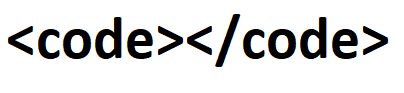

P r o j e c t s

A complete list of projects I completed while in graduate school, as well as course descriptions.
T e a c h i n g

A page devoted to the teaching opportunities I had during graduate school.
M e n t o r i n g

A page devoted to the Study Jam Tutoring program, a program in which I served as the inaugural tutor for computer science.